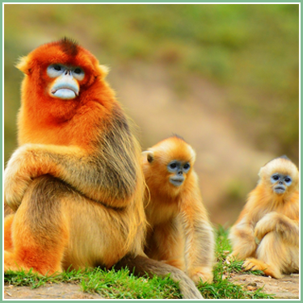
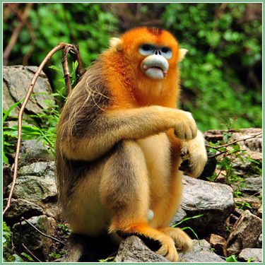
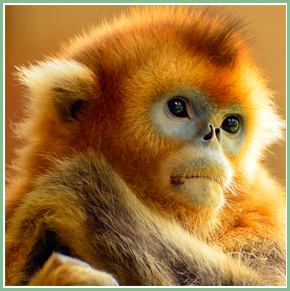

● 金丝猴 ●

梅花鹿(拉丁学名:Rhinopithecus)，毛质柔软，鼻子上翘，有缅甸金丝猴、怒江金丝猴、川金丝猴、滇金丝猴、黔金丝猴、越南金丝猴6种，其中除缅甸金丝猴和越南金丝猴外，均为中国特有的珍贵动物。
金丝猴群栖高山密林中，以野果、竹笋、苔藓为食，亦喜食鸟蛋等肉类，栖息地海拔很高，身上的长毛可耐寒。6个品种均为珍稀品种，均列为红色物种名录濒危品种。

形态特征
金丝猴的共同特征为鼻孔大，上翘，唇厚，无颊囊，这是为了适应高原缺氧进化而来。
其中川金丝猴毛色为金黄色，肩背具长毛，尾与体等长或更长，成年雄体长平均为680毫米，尾长685毫米；
黔金丝猴体型近似川金丝猴而稍小，但尾较之更长，体长为637~690毫米，尾长846~905毫米，体背灰褐，有的具黄的色调；
越南金丝猴体形较小，胸部、腹部为黑色，四肢内侧浅黄色；
缅甸金丝猴全身的毛几乎全黑，头顶有一撮细长向前卷曲的黑毛，耳部和颊部有小撮白毛，面部皮肤呈淡粉色，下巴上有独特的白色胡须，会阴部为白色且容易分辨；尾巴较长，几乎是身长的1.4倍，成年雄性缅甸金丝猴，身长55.5厘米，尾长78厘米。

栖息环境
金丝猴是典型的森林树栖动物，常年栖息于海拔1500~3300米的森林中。其植被类型和垂直分布带 属亚热带山地常绿、落叶阔叶混交林、亚热带落叶阔叶林和常绿针叶林以及次生性的针阔叶混交林等四个植被类型，随着季节的变化，它们不向水平方向迁移，只在栖息的环境中作垂直移动。群栖生活，每个大的集群是按家族性的小集群为活动单位。最大的群体可达600余只在灵长类中，如此庞大的群体亦属罕见。